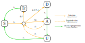
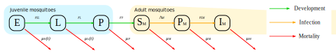
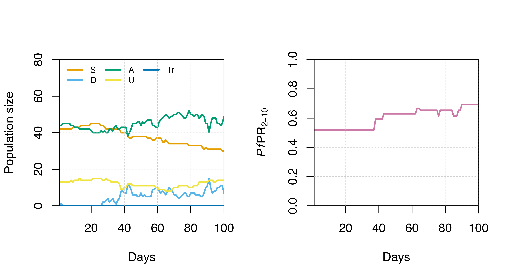
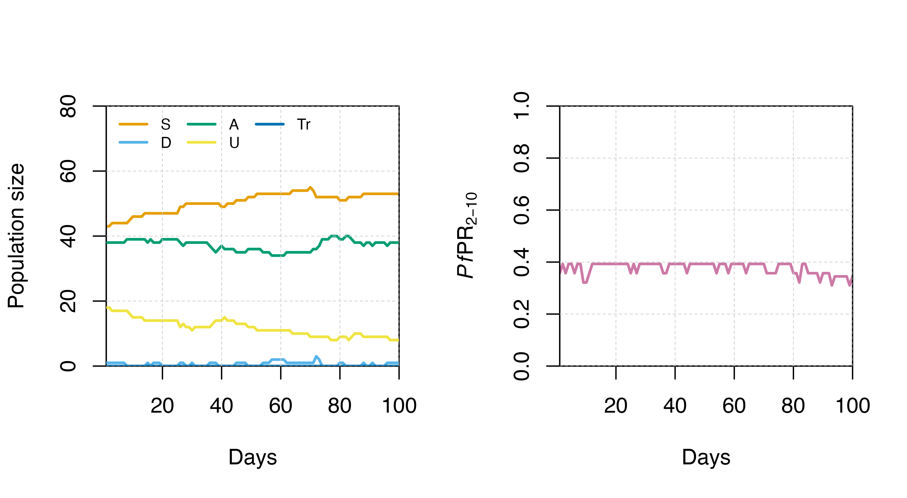
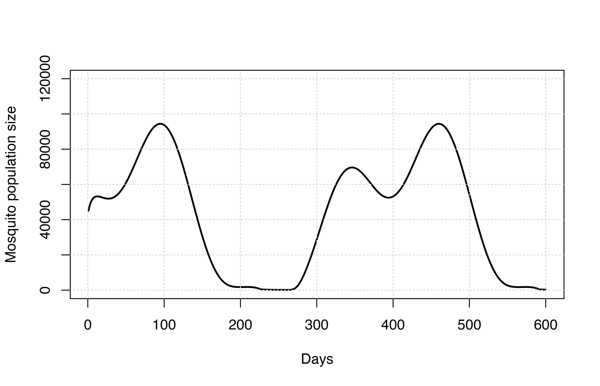

Model.Rmd
# Load the requisite packages:
library(malariasimulation)
# Set colour palette:
cols <- c("#E69F00", "#56B4E9", "#009E73", "#F0E442", "#0072B2", "#D55E00", "#CC79A7")This vignette gives a high-level overview of the individual-based malariasimulation model. It then gives a basic example of how the model can be used, how to initiate the model with equilibrium conditions, and demonstrates how to change named parameter inputs, including setting seasonality parameters. Finally, it lists and broadly describes the content of the remaining vignettes, summarising parameter and intervention setting functions.
The human variables are documented in R/variables.R.
The functions governing the human flow of infection and immunity processes are described in the following files:

Modelled human states are Susceptible (S), Treated (Tr), Clinical disease (D), Asymptomatic infection (A) and Sub-patent infection (U).
Parameters shown on the infographic include:
with the rates of recovery:
Superinfection may occur in individuals with asymptomatic or sub-patent infections at the same rates as standard infection (dashed arrows).
The force of infection (\(\Lambda_i\)) is impacted by
pre-erythrocytic immunity, mosquito biting rate and population size and
level of infectivity (specific details can be found in the references
below). All default parameters can be found in the documentation for the
function get_parameters(). Please also note that while the
infographic above displays rate parameters, the parameter list uses
delay durations, e.g. the rate \(r_D\)
is the inverse of the delay from state D to A
(dr in the model):
\[r_D=dr^{-1}\]
To maintain a constant population size during simulations, the birth rate of new susceptible individuals is set to be equal to the overall death rate.
The functions governing mosquito biological processes and dynamics are spread out between the following files:

Modelled mosquito states are separated into three juvenile stages: early (E) and late (L) larval stages, the pupal stage (P), and three adult states: susceptible (SM), incubating (PM) and infectious individuals (IM). Mosquitoes in any state may die, where they enter the NonExistent state. The model tracks both male and female juvenile mosquitoes, but only female adult mosquitoes.
Parameters shown on the infographic include mosquito developmental rates:
\(r_{EL}\): from early to late larval stage
\(r_{L}\): from late larval stage to pupal stage
\(r_P\): from pupal stage to adult stage
Mosquito infection and incubation rates:
\(\Lambda_M\): the force of infection on mosquitos (FOIM, i.e. from human to mosquito)
\(r_{EM}\): extrinsic incubation period
And mortality rates:
\(\mu_E(t)\): the early larval stage death rate
\(\mu_L(t)\): the late larval stage death rate
\(\mu_P\): the pupal death rate
\(\mu_M\): the adult mosquito death rate
Larval mosquitoes experience density dependent mortality due to a carrying capacity, \(K(t)\), which may change seasonally with rainfall and where \(\gamma\) is the effect of density-dependence on late stage larvae compared with early stage larvae as follows:
\[ \mu_E = \mu_E^0(1+\frac{E(t)+L(t)}{K(t)}) \\ \mu_L = \mu_L^0(1+\gamma\frac{E(t)+L(t)}{K(t)}) \]
Griffin JT, Hollingsworth TD, Okell LC, Churcher TS, White M, et al. (2010) Reducing Plasmodium falciparum Malaria Transmission in Africa: A Model-Based Evaluation of Intervention Strategies. PLOS Medicine 7(8): e1000324. https://doi.org/10.1371/journal.pmed.1000324
White, M.T., Griffin, J.T., Churcher, T.S. et al. Modelling the impact of vector control interventions on Anopheles gambiae population dynamics. Parasites Vectors 4, 153 (2011). https://doi.org/10.1186/1756-3305-4-153
Griffin, J., Ferguson, N. & Ghani, A. Estimates of the changing age-burden of Plasmodium falciparum malaria disease in sub-Saharan Africa. Nat Commun 5, 3136 (2014). https://doi.org/10.1038/ncomms4136
Griffin, J. T., Déirdre Hollingsworth, T., Reyburn, H., Drakeley, C. J., Riley, E. M., & Ghani, A. C. (2015). Gradual acquisition of immunity to severe malaria with increasing exposure. Proceedings of the Royal Society B: Biological Sciences, 282(1801). https://doi.org/10.1098/rspb.2014.2657
Griffin, J. T., Bhatt, S., Sinka, M. E., Gething, P. W., Lynch, M., Patouillard, E., Shutes, E., Newman, R. D., Alonso, P., Cibulskis, R. E., & Ghani, A. C. (2016). Potential for reduction of burden and local elimination of malaria by reducing Plasmodium falciparum malaria transmission: A mathematical modelling study. The Lancet Infectious Diseases, 16(4), 465–472. https://doi.org/10.1016/S1473-3099(15)00423-5
The key package function is run_simulation() which
simply requires, in its most basic form, a number of timesteps in days.
Default parameter settings assume a human population size of 100, an
initial mosquito population size of 1000 (where the default species is
set to Anopheles gambiae), with no treatment interventions and
no seasonality and models the spread of Plasmodium falciparum.
The full parameters list can be seen in the documentation for
get_parameters().
test_sim <- run_simulation(timesteps = 100)The run_simulation() function then simulates malaria
transmission dynamics and returns a dataframe containing the following
outputs through time:
infectivity: human infectiousnessEIR_All: the entomological inoculation rate (for all
mosquito species)FOIM: the force of infection on mosquitoesmu_All: adult mosquito death rate (for all
species)n_bitten: the number of infectious bitesn_infections: the number human infectionsnatural_deaths: deaths from old ageS_count, A_count, D_count,
U_count, Tr_count: the human population size
in each stateica_mean: mean acquired immunity to clinical
infectionicm_mean: mean maternal immunity to clinical
infectionib_mean: mean blood immunity to all infectionid_mean: mean immunity from detected using
microscopyiva_mean: mean acquired immunity to severe
infectionivm_mean: mean maternal immunity to severe
infectionn_730_3650: population size of an age group of interest
(where the default is set to 730-3650 days old, or 2-10 years, but which
may be adjusted (see Demography
vignette for more details)n_detect_730_3650: number with possible detection
through microscopy of a given age groupp_detect_730_3650: the sum of probabilities of
detection through microscopy of a given age groupE_gamb_count, L_gamb_count,
P_gamb_count, Sm_gamb_count,
Pm_gamb_count, Im_gamb_count: species-specific
mosquito population sizes in each state (default set to An.
gambiae)total_M_gamb: species-specific number of adult
mosquitoes (default set to An. gambiae)
head(test_sim, n = 3)
#> timestep infectivity EIR_gamb FOIM_gamb mu_gamb n_bitten n_infections
#> 1 1 0.031406 0 0.008329191 0.132 0 0
#> 2 2 0.031344 0 0.008329191 0.132 0 0
#> 3 3 0.031344 0 0.008329191 0.132 0 0
#> natural_deaths S_count A_count D_count U_count Tr_count ica_mean icm_mean
#> 1 0 42 44 1 13 0 0 0
#> 2 0 43 44 1 12 0 0 0
#> 3 0 43 44 1 12 0 0 0
#> ib_mean id_mean iva_mean ivm_mean n_730_3650 n_detect_730_3650
#> 1 0 0 0 0 24 12
#> 2 0 0 0 0 24 12
#> 3 0 0 0 0 24 12
#> p_detect_730_3650 E_gamb_count L_gamb_count P_gamb_count Sm_gamb_count
#> 1 12 39150.44 1139.318 169.752 992.2288
#> 2 12 39150.44 1139.318 169.752 985.4751
#> 3 12 39150.44 1139.318 169.752 979.6056
#> Pm_gamb_count Im_gamb_count total_M_gamb
#> 1 7.77118 0 1000
#> 2 14.52490 0 1000
#> 3 20.39436 0 1000Additional output details can be found in the
run_simulation() documentation.
Age stratified results for
incidence, clinical incidence and
severe case incidence may also be included in the
output if desired and must be specified in the parameter list (see
get_parameters() for more details and Demography
for an example). These inputs will add extra columns to the output for
the number of infections (n_) and the sum
of probabilities of infection (p_) for the
relevant total, clinical or severe incidences for each specified age
group.
Where treatments are specified,
n_treated will report the number that have received
treatment. Where bed nets are distributed,
net_usage specifies the number sleeping under a bednet.
These outputs can then be visualised, such as the population changes
in states. Another key output is the prevalence of detectable infections
between the ages of 2-10 (PfPR2-10), which can be
obtained by dividing n_detect_730_3650 by
n_730_3650.
# Define vector of column names to plot
cols_to_plot <- paste0(c("S","D","A","U","Tr"),"_count")
# Create plotting function
states_plot <- function(sim){
# Set up plot with first state
plot(x = sim$timestep, y = sim[,cols_to_plot[1]],
type = "l", col = cols[1], ylim = c(0,80),
ylab = "Population size", xlab = "Days",
xaxs = "i", yaxs = "i", lwd = 2)
# Add remaining states
sapply(2:5, function(x){
points(x = sim$timestep, y = sim[,cols_to_plot[x]],
type = "l", lwd = 2, col = cols[x])})
grid(lty = 2, col = "grey80", lwd = 0.5)
# Add legend
legend("topleft", legend = c("S","D","A","U","Tr"), col = cols,
lty = 1, lwd = 2, bty = "n", ncol = 3, cex = 0.7)
}
par(mfrow = c(1,2))
states_plot(test_sim)
# Calculate Pf PR 2-10
test_sim$PfPR2_10 <- test_sim$n_detect_730_3650/test_sim$n_730_3650
# Plot Pf PR 2-10
plot(x = test_sim$timestep, y = test_sim$PfPR2_10, type = "l",
col = cols[7], ylim = c(0,1), lwd = 2,
ylab = expression(paste(italic(Pf),"PR"[2-10])), xlab = "Days",
xaxs = "i", yaxs = "i")
grid(lty = 2, col = "grey80", lwd = 0.5)
Note that the model will not begin simulations from an equilibrium
state as default (as in the simulation above). To begin the simulation
at approximate equilibrium conditions, please use the
set_equilibrium() function, which requires you to specify
an initial EIR value:
params <- get_parameters() |>
set_equilibrium(init_EIR = 5)
test_sim_eq <- run_simulation(timesteps = 100, parameters = params)
par(mfrow = c(1,2))
states_plot(test_sim_eq)
# Calculate Pf PR 2-10
test_sim_eq$PfPR2_10 <- test_sim_eq$n_detect_730_3650/test_sim_eq$n_730_3650
# Plot Pf PR 2-10
plot(x = test_sim_eq$timestep, y = test_sim_eq$PfPR2_10, type = "l",
col = cols[7], ylim = c(0,1),
ylab = expression(paste(italic(Pf),"PR"[2-10])), xlab = "Days",
xaxs = "i", yaxs = "i", lwd = 2)
grid(lty = 2, col = "grey80", lwd = 0.5)
The get_parameters() function generates a complete
parameter set that may be fed into run_simulation(). A
number of helper functions have been designed to assist
in changing and setting key parameters, which are explained across the
remaining vignettes.
Some parameters (e.g. population size, age group rendering, setting
seasonality) must still be replaced directly. When this is the case,
care must be taken to ensure the replacement parameters are in the same
class as the default parameters (e.g. if the parameter is a numeric, its
replacement must also be numeric, if logical, the replacement must also
be logical). Parameters are replaced by passing a list of named
parameters to the get_parameters() function using the
overrides argument. The following example shows how to
change the human_population parameter.
# Use get_parameters(overrides = list(...))) to set new parameters
new_params <- get_parameters(overrides = list(human_population = 200)) While other parameters can be changed individually, we do not generally recommended adjusting these without a detailed understanding of how this will impact the model assumptions. We strongly encourage users to stick with the parameter setting functions and methods described in these vignettes when adjusting parameter settings.
The malariasimulation package has the capacity to
simulate malaria transmission for a range of seasonal transmission
profiles. This is achieved by specifying an annual rainfall profile that
shapes mosquito population dynamics, thereby impacting malaria
transmission. Please see the Umbrella package for
instructions on generating seasonality parameters.
To include seasonality, we must set the parameter
model_seasonality = TRUE and assign values to parameters
that determine seasonality: g0, g and
h (which represent fourier coefficients). These parameters
must be set directly by passing a list of named parameters to the
overrides argument of the get_parameters()
function.
# Set parameters, including seasonality parameters
params_seasons <- get_parameters(overrides = list(
model_seasonality = TRUE,
g0 = 0.28,
g = c(0.2, -0.07, -0.001),
h = c(0.2, -0.07, -0.1)))
# Run simulation
seasonality_simulation <- run_simulation(timesteps = 600, parameters = params_seasons)
# Collect results
All_mos_cols <- paste0(c("E","L","P","Sm","Pm", "Im"),"_gamb_count")
# Plot results
plot(seasonality_simulation[,1], rowSums(seasonality_simulation[,All_mos_cols]), lwd = 2,
ylim = c(0, 120000), type = "l", xlab = "Days", ylab = "Mosquito population size")
grid()
The mosquito population size is no longer constant and follows the patterns set by rainfall.
Mosquitoes may also be modelled deterministically (the default) or individually.
To model individual mosquitoes, set
individual_mosquitoes to TRUE in the
overrides argument of get_parameters().
simparams <- get_parameters(overrides = list(individual_mosquitoes = TRUE))The remaining vignettes describe how to adjust sets of parameters through a number of methods and functions as follows:
Population age group rendering
set_demography(): setting population demographies
and time-varying death rates
set_drugs(): for drug-specific parameters (with
in-built parameter sets)
set_clinical_treatment(): implemention of clinical
treatment interventions
set_mda(): implementation of mass drug
administration interventions
set_smc(): implementation of seasonal malarial
chemoprevention interventions
set_pmc(): implementation of perennial malarial
chemoprevention interventions
peak_season_offset(): correlating timed
interventions with seasonal malaria
set_mass_pev(): implementation of a pre-erythrocytic
vaccination intervention via a mass distribution strategy
set_pev_epi(): implementation of a pre-erythrocytic
vaccination intervention via an age-based distribution strategy
set_tbv(): implementation of a transmission blocking
vaccination intervention
set_bednets(): implementation of bednet distribution
interventionVector Control: Indoor Residual Spraying
set_spraying(): implementation of an indoor residual
spraying interventionset_species(): setting mosquito distributionset_carrying_capacity(): changes mosquito carrying
capacity, e.g. to model larval source management impactrun_metapop_simulation(): run multiple interacting
models simultaneouslyrun_simulation_with_repetitions(): running simulations
with replicatesset_parameter_draw(): incorporating parameter
variation